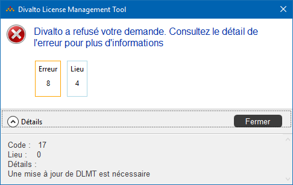
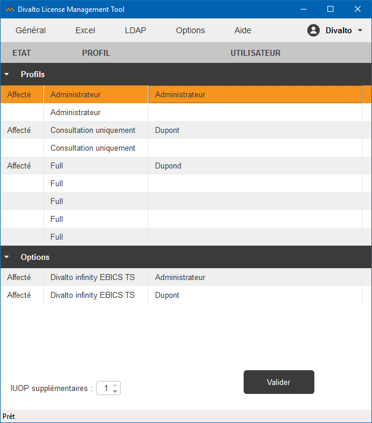
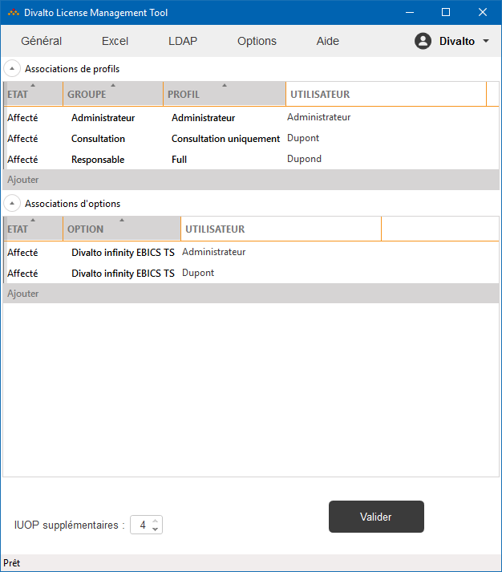

Accueil | Passage de la version tarifaire infinity 01-2017 à infinity 04-2018
A partir du 26 Avril 2018, entre en vigueur le nouveau
tarif Divalto infinity 04-2018, qui simplifie les changements de « profils
utilisateur ».
Ce nouveau tarif implique
une mise à jour d'Harmony ou du gestionnaire de licences « DLMT ».
Attention : Cette mise à jour est
OBLIGATOIRE pour l’ensemble des clients utilisateurs actuellement en Version
10 qui souhaitent apporter
des modifications à leur configuration de licences (par exemple,
un changement d’affectation de profils).
Remarque : Le passage au nouveau tarif est automatique et ne nécessite
aucune autre intervention sur le site du client.
Installation de la dernière version d'Harmony et de DLMT
La première version d'Harmony qui gère le tarif Divalto
infinity 04-2018 est la version "Harmony
2018 402" avec le hotfix "Hotfix_Harmony_2018_402_01".
Si votre version installée d'Harmony lui est inférieure, installez la dernière
version d'Harmony ou le package "DlmtSetup.msi".
Si DLMT doit être exécuté sur un poste client léger, installez le package
"DlmtSetup.msi" sur
ce poste.
Rappel : En cas de mise à jour du serveur d'applications, il est aussi nécessaire de mettre à jour les postes clients légers.
Liens pour le téléchargement
La dernière version d'Harmony est disponible sur MyDivalto.
"DlmtSetup.msi"
https://app.divaltocloud.com/DlmtSetup.msi
Si vous exécutez l'ancienne version de DLMT après le 25 Avril 2018
Vous obtiendrez l'erreur suivante :

Utilisation de la nouvelle version de DLMT
L'ancienne version de DLMT affichait un tableau pré-rempli contenant la liste de tous les profils et options nommées (y compris les profils ou options non encore affectés à un utilisateur) :

La nouvelle version de DLMT affiche uniquement les profils ou options déjà affectées :

Pour affecter un utilisateur à un profil, cliquez sur le bouton Ajouter et saisissez les éléments suivants :
Le même principe s'applique à la gestion des options nommées.
(*) La notion de groupes de profils est expliquée en détails dans
le nouveau tarif Infinity 04-2018.